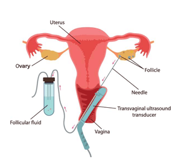

- Yesterday interview | 14:17
- Views 45.786
क्या आप निःसंतानता के दुःख से परेशान हैं...??? डॉ. तरूण गुप्ता द्वारा आयुर्वेदिक उपचार से संतान सुख पा सकते हैं
डॉ. तरूण गुप्ता हिमालयन प्रसिद्ध डॉ. येशी ढोंडेन के साथ 15 साल से ट्रेनिंग कर रहे..डॉ. तरूण गुप्ता ने बनाई आयुर्वेदिक shivling,putarjivk..18+ जड़ीबूटी से अविष्कार किया वंश जो महिलाओं की फर्टिलिटी बूस्ट करता है वह 25-30 दिन में... आया जान्ते वह डॉक्टर से बात करके अभ्यास अनुभव: 10 वर्ष
"यदि आप वास्तव में प्रजनन क्षमता हासिल करना चाहते हैं, तो डॉ. तरूण गुप्ता द्वारा विकसित उत्पादों का उपयोग करें और फिर देखिये चमत्कार"
डॉ. तरूण गुप्ता का कहना है कि सिर्फ 60 दिनों में इस समस्या को जड़ से ठीक किया जा सकता है। . जे उन्होंने अपने 10 वर्षों के अभ्यास में कई बार ऐसा किया है। यह हमारा सौभाग्य है कि डॉ. तरूण गुप्ता इतने बड़े डॉक्टर का इंटरव्यू करने का मौका मिला.
स्नेहा शर्मा का इंटरव्यू द्वारा
नमस्ते डॉ. तरूण गुप्ता जी कृपया हमें उन जोड़ों के बारे में बताएं जो इस समस्या से पीड़ित हैं। वास्तव में क्या किया जाना चाहिए?
जी हां, स्नेहा शर्मा जी, जो लोग बच्चे पैदा करने के दर्द से परेशान हैं उन्हें ये आर्टिकल जरूर पढ़ना चाहिए।
अगर आप बच्चे पैदा करना चाहते हैं तो घर पर ही इलाज संभव है। मेरे हजारों मरीज़ मेरी सलाह का पालन करते हैं कर रहा है
यह रहस्य क्या है?
इसके लिए कई कारण हैं,
जैसे पुरुषों में शुक्राणु का कम बनना मृत शुक्राणु, खराब शुक्राणु गुणवत्ता, शुक्राणु गतिशीलता की कमी
महिलाओं में देखा जाए तो महिला के शुक्राणु का बनना कम हो जाता है, फैलोपियन ट्यूब ख़राब हो जाती है, शुक्राणु का निर्माण समय पर नहीं होता है। ऐसे ही कई कारणों से लोग संतान सुख से वंचित रह जाते हैं।
डॉक्टर साहब ऐसा क्या कारण है ???
हमारी जीवनशैली, गलत व्यसनों, अस्वास्थ्यकर आहार के कारण शुक्राणुओं की संख्या कम हो जाती है, महिलाओं का मासिक धर्म कम हो जाता है साथ ही चक्र भी अनियमित हो जाता है जिसके कारण यह समस्या पैदा होती है। अब नशे की लत के कारण युवाओं में प्रजनन क्षमता बढ़ जाती है गिरावट आ रही है जो वास्तविक चिंता का विषय है।
डॉक्टर साहब, आपके पास प्रजनन क्षमता का क्या इलाज है और यह कितना कारगर है?
गर्भवती होने के लिए ओव्यूलेशन और निषेचन के दौरान सभी चरण सही ढंग से किए जाने चाहिए। कभी-कभी दंपत्तियों में बांझपन पैदा करने वाली समस्याएं जन्म के समय और कभी-कभी बाद में जीवन में मौजूद होती हैं विकसित होता है. बांझपन के कारण एक या दोनों भागीदारों को प्रभावित कर सकते हैं। कभी-कभी, कोई कारण नहीं मिल पाता।
मेरे पास इस समस्या के लिए बहुत प्रभावी आयुर्वेदिक उपचार उपलब्ध है धारा एंटरप्राइजेज द्वारा निर्मित ये दवाएं बांझपन को रोकने में बहुत प्रभावी हैं
पुरुष बांझपन के कारण
तंबाकू और सुपारी के अधिक सेवन से आनुवंशिक दोष, मधुमेह जैसी स्वास्थ्य समस्याएं कम हो जाती हैं शुक्राणु उत्पादन। यौन समस्याओं के कारण शुक्राणु वितरण में समस्याएँ, जैसे शीघ्रपतन; कुछ आनुवंशिक रोग, जैसे सिस्टिक फाइब्रोसिस; संरचनात्मक समस्याएं, जैसे अंडकोष में रुकावट; या प्रजनन अंगों को क्षति या चोट.कुछ पर्यावरणीय कारक जैसे कीटनाशक और अन्य रसायन और विकिरण ओवरएक्सपोज़र.सिगरेट धूम्रपान, शराब, मारिजुआना, एनाबॉलिक स्टेरॉयड और जीवाणु संक्रमण, उच्च रक्तचाप और अवसाद के इलाज के लिए दवाएँ लेने से भी प्रजनन क्षमता प्रभावित हो सकती है। गर्मी का बार-बार एक्सपोज़र, जैसे सॉना या हॉट टब में, शरीर का तापमान और शुक्राणुओं की संख्या बढ़ सकती है उत्पादन पर असर पड़ सकता है. ऐसे कारणों से प्रजनन क्षमता कम हो जाती है और लोगों को संतान प्राप्ति का सुख भी कम हो जाता है से वंचित है
महिला बांझपन के कारण
ओव्यूलेशन विकार, जो अंडाशय से अंडे की रिहाई को प्रभावित करते हैं। इनमें हार्मोनल विकार भी शामिल हैं जैसे पॉलीसिस्टिक ओवरी सिंड्रोम. हाइपरप्रोलैक्टिनीमिया, एक ऐसी स्थिति जिसमें आपको बहुत अधिक प्रोलैक्टिनेमिया होता है प्रोलैक्टिन - हार्मोन जो स्तन के दूध के उत्पादन को उत्तेजित करता है - होने से भी ओव्यूलेशन में बाधा आती है कर सकना या तो बहुत अधिक थायराइड हार्मोन (हाइपरथायरायडिज्म) या बहुत कम (हाइपोथायरायडिज्म) मासिक धर्म चक्र को प्रभावित कर सकता है। बांझपन को प्रभावित या कारण बना सकता है। अन्य अंतर्निहित कारणों में अत्यधिक व्यायाम, खान-पान संबंधी विकार शामिल हैं या ट्यूमर शामिल हो सकते हैं। गर्भाशय या गर्भाशय ग्रीवा की असामान्यताएं, जिनमें गर्भाशय ग्रीवा की असामान्यताएं भी शामिल हैं, गर्भाशय में पॉलीप्स या गर्भाशय संरचनाएं होती हैं। गर्भाशय की दीवार में (गर्भाशय फाइब्रॉएड)। गैर-कैंसरयुक्त (सौम्य) ट्यूमर फैलोपियन ट्यूब को अवरुद्ध कर देते हैं या गर्भाशय में एक निषेचित अंडे को प्रत्यारोपित कर देते हैं रुकने से बांझपन हो सकता है। फैलोपियन ट्यूब की क्षति या रुकावट, अक्सर फैलोपियन ट्यूब(सैल्पाइटिस) सूजन के कारण होता है। यह पेल्विक सूजन की बीमारी के परिणामस्वरूप हो सकता है, जो आमतौर पर होता है यौन संचारित संक्रमण, एंडोमेट्रियोसिस या आसंजन के कारण होता है। एंडोमेट्रियोसिस, तब होता है जब एंडोमेट्रियल ऊतक गर्भाशय के बाहर बढ़ता है, अंडाशय, गर्भाशय और फैलोपियन ट्यूब को कवर करता है। ट्यूब के कार्य को प्रभावित कर सकता है। प्राथमिक डिम्बग्रंथि अपर्याप्तता (प्रारंभिक रजोनिवृत्ति), जब अंडाशय काम करते हैं बंद हो जाता है तथा मासिक धर्म 45 वर्ष की आयु से पहले ही बंद हो जाता है।
IVF
- केवल 20 से 25% तक के positive रिजल्ट्स
- क्यी प्रकार के दुष्टपरिणाम
- लाखो रुपये का खर्च
- बहुत ही दर्दनाक उपचार
Putraveda

- 90% तक Positive रिज़ल्ट
- किसी प्रकार का कोई Side Effect नहीं
- 2 महीने के पूरे कोर्स की कीमत मात्र 4980 रुपये
- दवा का सेवन बहुत ही आसान

हम जानना चाहते हैंINFERTILITY CORSEउत्पाद में क्या प्रदान किया गया है? और यह भी बताएं कि कैसे उपयोग करें?
इसके लिए मेरे पास पुरुषों और महिलाओं दोनों के लिए इलाज उपलब्ध है जिसका विवरण इस प्रकार है.
- शुक्राणुओ का ना बनना या फिर कम बनना
- हार्मोनल प्रॉब्लम का होना
- शुक्राणुओ का कम motile होना
- वीर्य का पतला होना |
- टेस्टिस में इन्फेक्शन
- अंडो का कम बनना या फिर समय पर नहीं बनना या फूटना|
- अन्डेदानी में रसोली का होना |
- गर्भ का बार- बार गिरना या ना ठहरना |
- PCOD/PCOS (अन्डेदानी में पानी वाली रसोली का होना) |
- हार्मोनल प्रॉब्लम का होना|
- मासिक धर्म समय पर नहीं आना या फिर बिलकुल ही नहीं आना |
- Fallopian tubes मे किसी प्रकार की रुकावट का होना या बंद होना |
हमारी वेबसाइट से उपलब्ध है। हम इस वेबसाइट पर बेचते हैं इसे मेडिकल के रूप में निर्धारित कर दुकान पर लाभ के लिए बेचा जा रहा है कर रहा है। हमारा उद्देश्य लोगों को न्यूनतम संभव लागत पर सुविधाएं प्रदान करना है।
इस वेबसाइट के कई फायदे हैं. खुदरा मूल्य पर 50% की बचत करें जो हमें लागत कम रखने में मदद करता है।
उत्पाद कूरियर सेवा द्वारा भेजा जाता है और पैसा कूरियर बॉय को भेजा जाता है दिया जाना है। आप इस उपचार को घर पर ही कर सकते हैं ताकि डॉक्टर फीस और यात्रा का पैसा भी बचेगा आप चाहें तो तुलना कर सकते हैं, लेकिन मेरा मानना है INFERTILITY CORSE किसी अन्य की तरह ही प्रभावी कोई बात नहीं।
साक्षात्कार के लिए धन्यवाद डॉक्टर साहब! अंत में, आप हमारे पाठकों को संदेश भेजें देना चाहते हैं?
मैं आपके पाठकों को बता दूंगी कि गर्भवती होने के लिए ओव्यूलेशन और संसेचन के दौरान सभी चरण ठीक से किए जाने चाहिए। कभी-कभी दंपत्तियों में बांझपन पैदा करने वाली समस्याएं जन्म के समय से ही मौजूद होती हैं है, और कभी-कभी जीवन में बाद में विकसित होता है। बांझपन के कारण एक या दोनों भागीदारों को प्रभावित कर सकते हैं। कभी-कभी, कोई कारण नहीं मिल पाता। बांझपन का मुख्य लक्षण गर्भधारण न होना है। कोई अन्य स्पष्ट नहीं हो सकता है कोई लक्षण न हो. कभी-कभी महिलाएं अनियमित रूप से बांझ हो जाती हैं या फिर मासिक धर्म अनुपस्थित हो सकता है। कुछ मामलों में, बांझपन पुरुषों में हार्मोनल समस्याओं के कुछ लक्षण हो सकते हैं जैसे बालों के बढ़ने या यौन क्रिया में बदलाव।
नोट:-डॉ. तरूण गुप्ता जी उन 99 लोगों को INFERTILITY CORSE ऊपर विशेष छूट और आप खास ऑफर का लाभ उठा सकते हैं.

11 टिप्पणियाँ
-
-
शुक्राणु की कमी के कारण पिछले 7 वर्षों से मुझे बच्चे पैदा करने से रोक दिया गया था, लेकिन यह
इलाज से महज 7 महीने में उम्मीद की किरण नजर आने लगी है
Like 8
-
-
-
-
-
-
-
-
-
-
-
INFERTILITY CORSE छूट पर ऑर्डर करेंजैन परिवार
हमने कई जगहों से इलाज कराया, हर जगह से निराशा ही हाथ लगी. इन सभी निराशाओं के बीच, डॉ. तरूण गुप्ता द्वारा दिए गए इस कोर्स से मुझे अच्छे परिणाम मिले .
Like 5राजेश चौहान
नाजिर हुसैन
आज मुझे INFERTILITY CORSE पर छूट दी गई. Like 7
अमर सिंह राठौड़
मैं पहले से ही आयुर्वेदिक दवाओं पर भरोसा करता था, इस दवा ने मुझे बेहतर महसूस कराया। परिणाम प्राप्त हुआ
Like 1वरुणभाई दवे
मेरे एक दोस्त ने मुझे इस दवा के बारे में बताया, मैंने इसे ऑर्डर किया और नतीजा सिफर रहा एक महीने में
Like 3तुषार पटेल
मेरी उम्र 38 साल है और मुझे इस दवा से उम्मीद से ज़्यादा परिणाम मिले
Like 9करण यादव
इस औषधि से मुझे बहुत अच्छे परिणाम मिले हैं
Like 11पराग सिसोदिया
मैंने ऑर्डर दिया और केवल 15 दिनों में परिणाम मिल गया, मैंने अपने अंदर बहुत सारे बदलाव देखे
Like 13सतीश मारवाड़ी
डॉक्टर साहब का इंटरव्यू पढ़कर मैंने भी ये दवा ऑर्डर कर दी है
Like 7प्रवीण मथुकिया
मेरे एक बच्चे में कमी है मैंने कई इलाज कराए लेकिन कोई फर्क नहीं पड़ा मुझे इस दवा पर भरोसा है जो मैंने ऑर्डर की थी कर लिया है .
Like 2पंकजभाई वाघेला
इस औषधि के सेवन से मुझे शीघ्रपतन की समस्या से छुटकारा मिल गया और यह एक बहुत ही अच्छा उत्पाद है
Like 3संदीप श्रीवास्तव
नमस्ते बहुत अच्छा परिणाम Like 12
परेश चौटिया
मैंने अपने शुक्राणु की कमी के कारण उम्मीद छोड़ दी थी, लेकिन इस दवा से, मैं आज मैं बहुत खुश हूँ Like 5